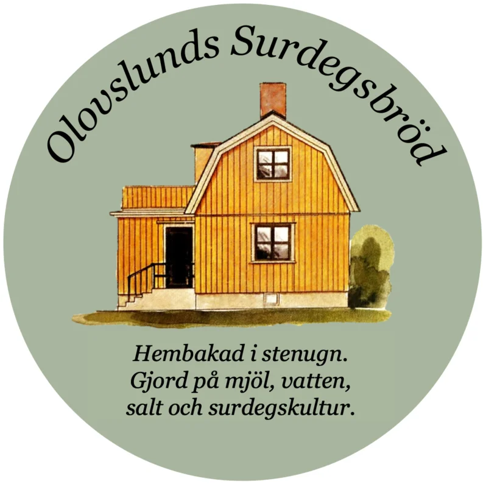

Surdegsplaneraren
Beräkna jästid, skapa bakschema och få perfekt surdegsbröd varje gång
Surdegskalkylatorn
Börja med att beräkna jästid baserat på temperatur och ingredienser. Sedan kan du skapa ett komplett bakschema med exakta klockslag.
Alla fält är obligatoriska. Använd Tab-tangenten för att navigera mellan fält. Tryck Escape för att stänga avancerade inställningar.
Rekommenderad jästid
Vad vill du göra nu?
Välj baserat på hur du vill baka idag
💡 Du kan alltid växla mellan flikarna ovan senare
Nybörjarguide: Ditt första surdegsbröd
Välkommen! Denna guide tar dig steg-för-steg genom hela processen – från att förbereda ingredienser till att ta ut det färdiga brödet ur ugnen. Följ de 8 stegen nedan så lyckas du! 🍞
📖 Ordlista
Alla termer förklarade – så du förstår vad du gör och varför!
- Autolyse
- När mjöl och vatten vilar tillsammans innan salt och surdeg tillsätts. Detta utvecklar gluten och gör degen lättare att arbeta med.
- Bulkjäsning
- Första jäsningen när hela degen jäser i skål. Här utvecklas smak och gluten genom vikningar.
- Hydrering
- Mängden vatten i relation till mjöl, uttryckt i procent. 75% hydrering = 375g vatten per 500g mjöl.
- Kalljäsning
- Jäsning i kylskåp (4-7°C) som ger surdegsbröd sin syrliga smak och förbättrar strukturen.
- Gluten
- Proteinnätverk som bildas när mjöl och vatten blandas. Det ger brödet struktur och gör att det kan hålla luftbubblor.
- Oven spring
- Den dramatiska expansionen som sker när brödet kommer in i den heta ugnen. Ångan håller skorpan mjuk så degen kan växa.
- Vikningar (Stretch and fold)
- Teknik där man drar ut och viker degen för att utveckla gluten utan traditionell knådning.
- Jäsningskorg (Banneton)
- Korg av rotting eller trä som ger brödet stöd och form under slutjäsningen. Skapar det klassiska mönstret.
- Poke test
- Test där man trycker fingret i degen för att se om bulkjäsningen är klar. Hålet ska studsa långsamt tillbaka.
- Surdegsstartare
- En levande kultur av jäst och mjölksyrabakterier som används istället för torr jäst för att jäsa bröd.
Ditt Bakschema
Planera din bakdag med exakta klockslag för varje steg
Ange när du vill börja baka
⚙️ Avancerade inställningar (klicka för att expandera)
Inget schema att visa än
För att skapa ditt bakschema:
- Gå till "Beräkna jästid" och fyll i dina ingredienser
- Kom tillbaka hit så genereras schemat automatiskt
eller
✨ Schemat uppdateras automatiskt när du ändrar inställningar
💡 Om bakschemat
- Autolys (valfritt): Blanda mjöl + vatten 30-60 min innan surdeg - ger bättre glutenutveckling
- Stretch & folds: Baseras på dina inställningar och hydrering
- Preshape & final shape: 20-30 min bänkvila mellan formningarna
- Kalljäsning: Om du använder det läggs det till automatiskt
- Ugnsförberedelse: Värm ugnen 45-60 min innan gräddning
🔍 Felsök ditt surdegsbröd
Fick inte ditt bröd som du ville? Välj problem nedan så får du diagnos och lösningar!
💡 Vanliga misstag att undvika
- Överjäst: Degen får inte jäsa för länge - använd kalkylatorn och fingertestet!
- Underjäst: Ge degen tillräckligt med tid - den ska växa 50-75%
- För blöt deg: Börja med 70% hydrering om du är ny
- Dålig surdegsstart: Mata din surdeg regelbundet och se till att den dubblats
- För lite salt: 2% salt är standard (t.ex. 20g salt per 1000g mjöl)
- Ugnstemperatur: Förvärm ugnen ordentligt i minst 45-60 min!
Tips & Vanliga Frågor
Lär dig finesser och hitta svar på vanliga frågor om surdegsbak
💡 Tips för bästa resultat
⭐ Viktigast: Stark surdegsstart
Din surdegsstart måste vara aktiv och stark för bra resultat. Här är hur du vet att den är redo:
- Matningsratio: Mata med minst 1:5:5 (1 del surdeg, 5 delar vatten, 5 delar mjöl) för att bygga styrka
- Dubblad på 4-6 timmar: Starten ska minst dubblas i storlek inom 4-6 timmar vid rumstemperatur
- Använd vid peak: Använd starten när den är på topp - precis innan den börjar falla tillbaka
- Flyttest: En liten klick surdeg ska flyta i vatten om den är aktiv nog
Problem? Om din start är svag, mata den 2-3 dagar i rad med 1:5:5 ratio innan du bakar.
🌡️ Kontrollera vattentemperaturen
Sikta på en degtemperatur på 24-26°C efter blandning. Använd varmare vatten (30-35°C) på vintern och kallare (18-22°C) på sommaren. Viktigt: Degtemperaturen påverkar jästhastigheten mer än rumstemperaturen!
🙌 Tekniken för stretch & fold
Så här gör du: Sträck ut degen tills du känner motstånd, vik över mot mitten, rotera bunken 90° och upprepa. Gör detta 4 gånger per vikningstillfälle. Kalkylatorn visar när och hur ofta du ska vika.
✂️ Snitta brödet
Använd en riktigt vass snittkniv (rakblad på skaft fungerar bäst). Snitta snabbt och bestämt i 45° vinkel, ca 1-2 cm djupt. Ett bra expansionssnitt släpper ut gasen kontrollerat och ger vacker expansion.
⏰ Lita på degen, inte bara klockan
Kalkylatorn ger en bra uppskattning, men titta alltid på degen också. Den ska ha ökat 50-75% i volym, ha synliga bubblor vid ytan, och studsa tillbaka långsamt vid fingertestet. Kom ihåg: Det är bättre att jäsa lite för långt än för kort!
❓ Vanliga frågor om surdeg och jästid
Perfekt jästid beror på flera faktorer. Använd kalkylatorn ovan för att få exakt tid anpassad efter dina förutsättningar. Klicka på frågorna nedan för att läsa mer!
Bulkjäsningen tar vanligtvis 3-8 timmar. Den exakta tiden beror på:
- Temperatur: Vid 22°C tar det cirka 5 timmar
- Surdegsandel: 20% är standard, mer ger snabbare jäsning
- Mjöltyp: Fullkornsmjöl jäser snabbare än vitt mjöl
Använd kalkylatorn ovan för att få exakt tid baserat på just dina förutsättningar.
Temperaturen avgör hur snabbt jästbakterierna arbetar. Här är vad du behöver veta:
- Optimal temperatur: 24-28°C för jästbakterierna
- Varje grad räknas: Varje gradförändring påverkar hastigheten med ~15%
- Kallare (18-20°C): Långsammare jäsning = mer utvecklad smak
- Varmare (26-28°C): Snabbare jäsning men risk för överjäsning
Hydrering är mängden vatten i förhållande till mjöl, uttryckt i procent. Till exempel:
- 75% hydrering: 750g vatten per 1000g mjöl
- 60-70%: Fast deg, lättare att hantera, kompaktare bröd
- 75-80%: Standard för ciabatta och lantbröd, luftig struktur
- 85%+: Mycket blöt deg, kräver erfarenhet, extra luftigt bröd
Kolla efter dessa tre tecken:
- Volymökning: Degen har växt med 50-75%
- Bubblor: Synliga luftbubblor på ytan och vid kanten
- Fingertest: När du trycker lätt ska degen studsa tillbaka långsamt
Vår inbyggda timer hjälper dig hålla koll på tiden så du inte missar det perfekta tillfället!
Stretch & fold (vikningar) utvecklar glutennätverket utan att knåda. Fördelarna är:
- Starkare deg: Bygger styrka så brödet håller formen
- Bättre luftstruktur: Fångar jäsgaserna mer effektivt
- Jämnare jäsning: Distribuerar jästen bättre i degen
Hur ofta? Kalkylatorn räknar ut antalet vikningar baserat på din hydrering. Blötare deg behöver fler vikningar, vanligtvis 3-5 gånger under bulkjäsningen.
Kalljäsning betyder att den formade degen vilar i kylskåpet i 2-48 timmar. Det är inte nödvändigt, men ger flera fördelar:
- Bättre smak: Längre jäsning = mer utvecklad, komplex smak
- Lättare att snitta: Kall deg är fastare och enklare att göra snitt i
- Flexibel timing: Grädda när det passar dig - imorgon, ikväll eller om 12 timmar
- Bättre expansion i ugnen: Kallare deg expanderar mer och ger en finare, knaprigare skorpa
Rekommendation: Om du har tiden, gör alltid kalljäsning för bästa resultat!
Det finns två huvudmetoder för att grädda surdegsbröd:
🔥 Dutch Oven (Gjutjärnsgryta)
Bäst för nybörjare! En förvärmad gjutjärnsgryta med lock skapar perfekta förutsättningar:
- Inbyggd ångmiljö: Locket fångar fukten från degen = perfekt skorpa
- Jämn värme: Gjutjärnet håller temperaturen stabilt
- Enklare hantering: Ingen separat ångtillförsel behövs
- Gör så här: Förvärm gryta + lock i 45-60 min på 250°C, lägg i degen, grädda med lock 20-25 min på 250°C, ta av lock, sänk till 230°C och grädda 15-20 min till
🔥 Öppen Bakning (Bakstål/Baksten)
För mer erfarna bagare. Ger ofta tunnare skorpa och bättre kontroll, men kräver mer teknik:
- Bakstål (rekommenderas): Leder värme bättre än sten, ger bättre bottenfärg och högre expansion. Förvärm i 45-60 min på högsta temp.
- Baksten: Fungerar utmärkt men behöver längre förvärmningstid (60-90 min). Billigare än bakstål.
- Ånga är kritiskt: Skapa ånga genom att hälla vatten i en varm plåt längst ner i ugnen när du sätter in brödet
- Temperatur: Starta på 250°C med ånga i 15-20 min, sänk till 230°C och fortsätt grädda i 20-25 min till brödet har fin färg
Vad ska jag välja? Nybörjare: börja med dutch oven! Erfarna: testa öppen bakning med bakstål för större bröd och mer kontroll.